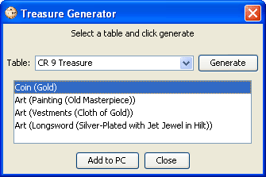

PCGen includes a treasure generator that can be used to randomly generate treasure for any PC, NPC, or monster created by PCGen. The generator uses the same gameMode based XML data files used by PCGen's built-in NPC generator. As of PCGen version 5.14, the only gameMode supported by the treasure generator is the RSRD (35e) gameMode.
You will find PCGen's built-in Treasure Generator command under the Tools menu.
The steps to use the generator are as follows:

Congratulations! You have succesfully generated and added treasure to your PC/NPC.